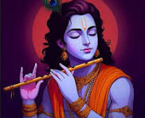
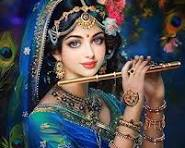

hello! good morning Lord Krishna is a major deity in Hinduism, revered as the eighth avatar of Lord Vishnu and often worshipped as the Supreme God himself. Born in a dungeon in Mathura to Devaki and Vasudeva, he was raised in Vrindavan by Yashoda and Nanda to escape the tyrant Kamsa. Known for his divine childhood, he is often depicted holding a flute, symbolizing divine music and love. Krishna embodies various roles—a divine child, a mischievous butter thief, a lover of the gopis, and a profound philosopher. He is central to the Mahabharata, serving as Arjuna's charioteer and guide. On the battlefield of Kurukshetra, he delivered the Bhagavad Gita, a holy scripture offering eternal wisdom on duty and righteousness. His life exemplifies the fight against evil (Dharma vs. Adharma). He is known for 16 divine qualities, including compassion, wisdom, and strength. His teachings emphasize selfless action and devotion. Krishna Janmashtami, his birthday, is celebrated globally with great fervor. He is a symbol of joy, love, and divine grace. His legacy continues to inspire millions regarding spiritual balance. His teachings promote peace, love, and unity.

Vrindavan, located in the Mathura district of Uttar Pradesh, India, is one of the most sacred pilgrimage sites for Hindus, particularly within the Vaishnava tradition.
Situated on the west bank of the Yamuna River, it is part of the Braj Bhoomi region, revered as the place where Lord Krishna spent his childhood days.
The town’s name is derived from Vrinda (meaning basil) and van (meaning grove), referring to the sacred tulsi groves still found in areas like Nidhivan.
It is estimated that the town is home to over 5,500 temples dedicated to the worship of Radha and Krishna.
Key spiritual spots include the Banke Bihari Temple, Radha Raman Temple, and the ISKCON temple (Krishna-Balaram Mandir).
The city was largely rediscovered in the 16th century by Chaitanya Mahaprabhu, who sought to locate the lost holy places associated with Krishna’s life.
Vrindavan is not just a place, but a "city of temples and ashrams" where millions of devotees visit annually to participate in festivals like Janmashtami and Holi.
The atmosphere is deeply devotional, with streets often echoing the chants of "Radhe Radhe".
Known for its ancient past, it is closely linked to the Bhagavata Purana, which details Krishna's divine plays (leelas).
In recent times, it has also become recognized as the "city of widows," where many women find refuge and spend their lives in devotion.
The town also houses Prem Mandir, a large, modern white marble temple established by Jagadguru Shri Kripalu Ji Maharaj.
Despite modernization, the town retains its traditional, spiritual, and rural feel, attracting millions of pilgrims every year.
The Yamuna River, though now experiencing significant pollution and a changed course, remains central to the town's religious identity.
Vrindavan remains a center for Bhakti Yoga, with many saints and philosophers having been associated with its sacred environment.
In essence, it is considered a place where the earthly and spiritual realms intersect.

She is the supreme goddess and the divine energy (Hladini Shakti) of Lord Krishna. Known as Radhika, Kishori Ji, or Shyama, she is considered the soul of Vrindavan. She is worshipped as the queen of all Gopis and the highest mediator between devotees and Krishna. Radha is the daughter of King Vrishabhanu and Queen Kirti Devi, born in Barsana. Her appearance day, Radhashtami, is celebrated with great joy in the month of Bhadra. She is described as having a complexion like molten gold, often wearing garments that are the same color as Krishna. Radha Rani embodies the highest ecstatic love for Krishna, known as Mahabhava-svarupini. Her devotion is unmatched, as she seeks no personal pleasure, only the happiness of her beloved Krishna. She is recognized as the "Madana Mohana Mohini," the one who even attracts the all-attractive Lord Krishna. She resides in Goloka Vrindavan and is the epitome of kindness and compassion. Her name is often chanted before Krishna's (Radhe-Shyam), as she represents the pinnacle of bhakti yoga. She is believed to be the source of all divine feminine energy, including Lakshmi and Durga. Her grace is believed to be so immense that she can deliver the most sinful souls. She is the embodiment of pure love, tenderness, and selfless dedication. She is the ultimate goal for devotees, guiding them to attain the divine love of Lord Krishna.
Radha and Krishna’s love is considered the highest form of divine devotion, representing the union of the soul with God. Radha was a cowherd girl (gopi) in Vrindavan, while Krishna was the playful son of Nanda and Yashoda. According to legends, they met on the banks of the Yamuna River, where Krishna’s beauty enchanted Radha instantly. Their love blossomed amidst the lush forests and fields of Vrindavan. Radha was known to be older than Krishna, yet their connection transcended age and worldly limitations. Krishna’s melodious flute playing would draw Radha, symbolizing the soul’s yearning for the Divine. Their love was not bound by marriage, yet they were considered soulmates, often called the "internal energy" (Hladini Shakti) of Krishna. They played, danced, and shared a deep, pure emotional connection that was different from worldly romance. Radha’s love was selfless, expecting nothing in return but the opportunity to serve and love him. The peace of Vrindavan was broken when Krishna had to leave for Mathura to fulfill his destiny of defeating Kamsa. Their separation brought great pain, marking a transition from physical love to spiritual yearning. Despite this separation, Radha remained united with Krishna spiritually, never truly parting from him. Radha is considered the embodiment of Bhakti (devotion), and her name is always taken before Krishna's (Radhe-Krishna). Their eternal bond signifies that true love is about surrender, devotion, and the longing of the individual soul for the Universal Spirit. The story of Radha and Krishna is celebrated as a timeless, divine romance that transcends all worldly boundaries.